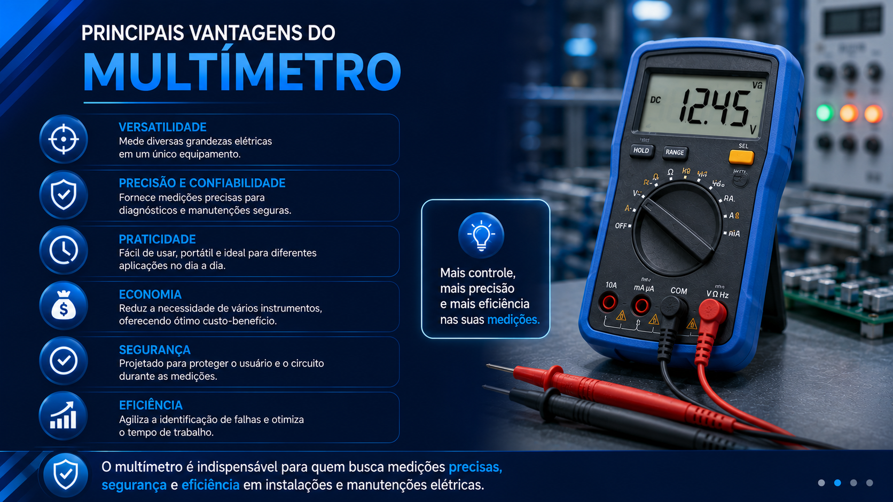
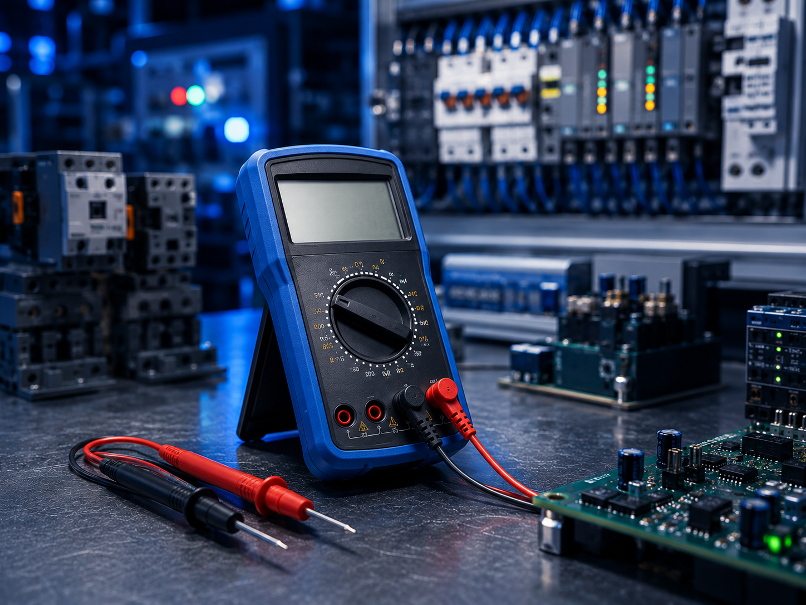

Multímetro
Instrumento essencial para medir e avaliar grandezas elétricas.



Conceito e Aplicação
O multímetro é um instrumento de medição utilizado para verificar tensão, corrente e resistência elétrica em circuitos elétricos, eletrônicos e sistemas de automação industrial.
- Mede tensão, corrente e resistência elétrica;
- Utilizado em manutenção elétrica e eletrônica;
- Auxilia em diagnósticos e testes industriais;
- Aplicado em circuitos elétricos e automação;
Informações Complementares

Funcionamento
O multímetro realiza medições elétricas em circuitos e componentes, permitindo verificar tensão, corrente e resistência com precisão.
Saiba Mais
Aplicações
Utilizado em manutenção elétrica, eletrônica e automação industrial para testes, diagnósticos e análise de circuitos elétricos.
Saiba Mais
Vantagens
Oferece praticidade, precisão e segurança nas medições elétricas, auxiliando técnicos e profissionais em diagnósticos industriais.
Saiba MaisEmpresas
As principais empresas que fabricam multímetros são referências no setor de instrumentos de medição elétrica e eletrônica. Em 2025, diversas marcas se destacam pela precisão, confiabilidade e tecnologia aplicada em equipamentos de medição utilizados por técnicos e profissionais da indústria.
A Fluke, a Minipa e a Hikari são algumas das principais fabricantes de multímetros utilizados em manutenção elétrica, eletrônica e automação industrial.
FLUKE: Empresa mundialmente reconhecida pela fabricação de instrumentos de medição de alta precisão. Seus multímetros são amplamente utilizados em diagnósticos elétricos industriais e manutenção profissional.
MINIPA: Empresa brasileira especializada em instrumentos de medição elétrica e eletrônica. Seus multímetros oferecem praticidade, confiabilidade e ampla aplicação em manutenção e automação industrial.
HIKARI: Marca voltada para equipamentos de medição e testes elétricos. Produz multímetros utilizados em análises elétricas, manutenção técnica e aplicações eletrônicas.